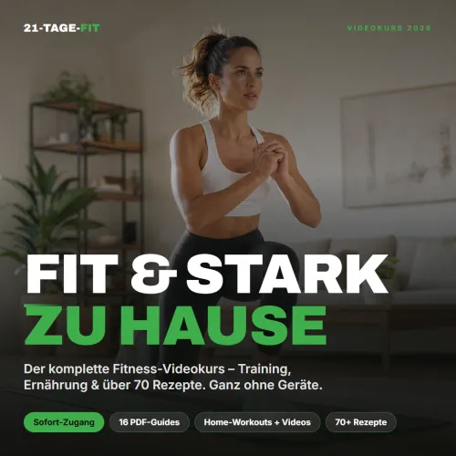
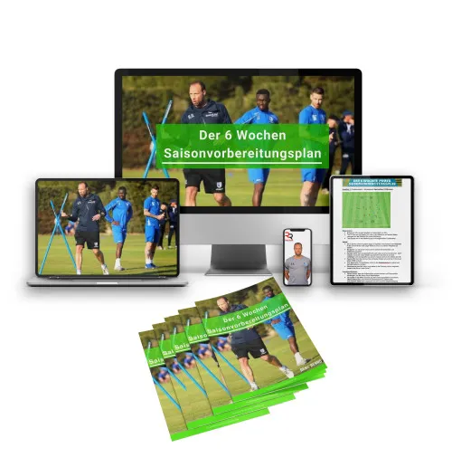

Vom Zuschauer zum Spielfeldrand | Praxis-Guide
Produktprofil · Marktplatz-Daten 2026-10-13 · Verkaufsseiten-Recherche 2026-10-13 · Kategorien: Sport, Photography & Film
- Vom Zuschauer zum Spielfeldrand | Praxis-Guide ist ein/e E-Book in Sport und Photography & Film, vertrieben über den Digistore24-Marktplatz von Anbieter dkzmedia2025, gelistet seit 2026-09-26.
- Listenpreis $31.34; Digistore24 meldet — Checkout-Konversion, — Stornierungsquote und 30 % Affiliate-Provision.
- Verdienst pro Verkauf (Affiliate): $9.40 (Anbieter-seitige Statistik, keine Prognose).
Interesse an Vom Zuschauer zum Spielfeldrand | Praxis-Guide? Aktueller Preis, Boni und Garantiebedingungen finden Sie auf der offiziellen Seite des Anbieters:
Offizielle Verkaufsseite ansehen
Affiliate-Link (Werbung) — wir verdienen ggf. eine Provision, ohne Mehrkosten für Sie.
Marktplatz-Daten
| Produkttyp | E-Book |
|---|---|
| Preis | $31.34 (Single payment) |
| Affiliate-Provision | 30 % |
| Garantie/Rückgabe | Laut Verkaufsseite des Anbieters — vor dem Kauf auf der offiziellen Seite prüfen |
| Anbieter | dkzmedia2025 (gelistet seit 2026-09-26) |
| Marktplatz-Statistiken* | Checkout-Konversion — · Stornoquote — · Verdienst/Verkauf $9.40 |
* Anbieter-seitige Statistiken von Digistore24; sie hängen von der Traffic-Qualität ab und sind keine Prognose.
Marktplatz-Beschreibung des Anbieters
Vom Zuschauer zum Spielfeldrand ist ein 75-seitiger Praxis-Guide für alle, die in die professionelle Sport- und Pressefotografie einsteigen möchten. Der Guide zeigt Schritt für Schritt, wie man sich vom Amateurbereich weiterentwickelt, ein geeignetes Portfolio aufbaut, erste Einsätze findet, Akkreditierungen anfragt und mit Fotoagenturen arbeitet. Behandelt werden unter anderem: • Aufbau eines professionellen Sportportfolios • Erste Einsätze und geeignete Einstiegsmöglichkeiten • Akkreditierungen im Sport • Presseausweis und professionelle Voraussetzungen • Zusammenarbeit mit Fotoagenturen • Workflow am Spieltag • Bildauswahl, Bearbeitung und Übermittlung • Caption, IPTC und redaktionelle Anforderungen • Praktische Checklisten und Beispiele Zielgruppe: Hobbyfotografen, angehende Sportfotografen, Pressefotografen und Fotografen, die sich professioneller im Sportbereich positionieren möchten. Verkaufspreis: 29,99 € Affiliate-Provision: 30 % Das Produkt wird als digitales PDF direkt nach erfolgreicher Bestellung ausgeliefert. Eine optimierte Verkaufsseite sowie Werbemittel für Social Media stehen zur Verfügung.
Von der Verkaufsseite des Anbieters
Seitentitel: Vom Zuschauer zum Spielfeldrand | DKZ Media
Meta-Beschreibung: Der Praxis-Guide für deinen Einstieg in die professionelle Sportfotografie.
Hauptüberschrift
VOM ZUSCHAUER ZUM SPIELFELDRAND
VOM ZUSCHAUER ZUM SPIELFELDRAND
VOM ZUSCHAUER ZUM SPIELFELDRAND
Abschnitts-Überschriften
- GUTE BILDER ALLEIN BRINGEN DICH NICHT AN DEN SPIELFELDRAND.
- GUTE BILDER ALLEIN BRINGEN DICH NICHT AN DEN SPIELFELDRAND.
- ICH HABE NICHT IN DER BUNDESLIGA ANGEFANGEN.
- ICH HABE NICHT IN DER BUNDESLIGA ANGEFANGEN.
- 75 SEITEN. EIN WEG VON DEN ERSTEN EINSÄTZEN BIS ZUR PROFESSIONELLEN PRESSEARBEIT.
- 75 SEITEN. EIN WEG VON DEN ERSTEN EINSÄTZEN BIS ZUR PROFESSIONELLEN PRESSEARBEIT.
- NICHT NUR THEORIE.
- NICHT NUR THEORIE.
- EIN GUTES INSTAGRAM-BILD IST NICHT AUTOMATISCH EIN GUTES PRESSEFOTO.
- EIN GUTES INSTAGRAM-BILD IST NICHT AUTOMATISCH EIN GUTES PRESSEFOTO.
Einstiegstext
Du willst nicht mehr nur gute Sportbilder machen, sondern verstehen, wie du dir ein Portfolio aufbaust, an erste Einsätze kommst, Akkreditierungen anfragst und Schritt für Schritt professioneller am Spielfeldrand arbeitest? In diesem Guide zeige ich dir den Weg, den ich selbst gegangen bin.
Sportfotografie wirkt von außen oft einfach. Kamera kaufen, Spiel fotografieren, Portfolio verschicken und irgendwann Bundesliga. In der Praxis kommen aber Fragen, die dir kaum jemand beantwortet: Wie bekommst du erste Einsätze? Was gehört in ein Presseportfolio? Wie schreibst du Vereine an? Wann brauchst du einen Presseausweis? Wie kommst du zu einer Agentur? Wie schnell müssen Bilder raus? Und was passiert eigentlich während eines professionellen Presse-Einsatzes? Dieser Guide setzt genau dort an.
Welche Bilder wirklich in dein Sportportfolio gehören, worauf Agenturen und Redaktionen achten und warum Social-Media-Bilder nicht automatisch gute Pressebilder sind.
Wie du Vereine und Pressestellen professionell kontaktierst, welche Nachweise relevant sein können und wie eine gute Akkreditierungsanfrage aufgebaut ist.
Fragen, die die Verkaufsseite beantwortet
- Was bekomme ich nach dem Kauf?
- Ist das ein gedrucktes Buch?
- Für welche Sportarten ist der Guide geeignet?
- Brauche ich bereits einen Presseausweis?
- Ist der Guide für komplette Anfänger geeignet?
- Wie bekomme ich das E‑Book?
- Wie lange kann ich das E‑Book zurückgeben?
Recherche-Methode: rohes HTML · 1055 Wörter · Qualität: rich · recherchiert am 2026-10-13. Vollständige Recherche-Datei (MD) ↗
Wie Produkte dieser Art geliefert werden
Allgemeiner Hinweis zu diesem Produkttyp (keine anbieterspezifische Anleitung): E-Books auf Digistore24 werden als digitaler Download geliefert (meist PDF/EPUB): direkt nach dem Checkout erhalten Sie einen Downloadlink oder Mitgliederzugang und können auf jedem Gerät lesen. Für die genaue Anwendung von Vom Zuschauer zum Spielfeldrand | Praxis-Guide sind die offizielle Verkaufsseite und die enthaltenen Materialien maßgeblich.
Gut zu wissen
- Keine Garantie-Formulierung in unserer Recherche gefunden — bestätigen Sie das Rückgabefenster auf der offiziellen Seite, bevor Sie kaufen.
- Marktplatz-Zahlen (Preis, Provision, Konversion, Stornoquote) — Quelle: offizielle Digistore24-Marktplatz-API (Affiliate-Sicht), Stand 2026-10-13. Gegenprüfung: Marktplatz-Suche nach Produkt-ID 735851.
- Verkaufsseiten-Zitate — Quelle: https://dkzmedia.com/ebook, abgerufen 2026-10-13 (Methode: rohes HTML). Verify: offizielle Seite öffnen.
- Garantie / Rückgabe — vom Anbieter festgelegt; vor dem Kauf auf der Verkaufsseite bestätigen.
- Nicht von uns geprüft: Produktqualität, Ergebnisse, Testimonials — kein Praxistest für dieses Listing durchgeführt.
Häufige Fragen zu Vom Zuschauer zum Spielfeldrand | Praxis-Guide
Antworten aus dem Marktplatz-Snapshot (2026-10-13) und der Verkaufsseiten-Recherche (2026-10-13); Anbieteraussagen sind inline gekennzeichnet.
Was ist Vom Zuschauer zum Spielfeldrand | Praxis-Guide?
Vom Zuschauer zum Spielfeldrand | Praxis-Guide ist ein Angebot des Typs „E-Book" im Digistore24-Marktplatz, Anbieter: dkzmedia2025, gelistet seit 2026-09-26. Eingepflegt unter Sport und Fotografie & Film. Digistore24 wickelt Checkout, Lieferung und Rückgaben ab.
Wie viel kostet Vom Zuschauer zum Spielfeldrand | Praxis-Guide?
Der Digistore24-Marktplatz listet es für $31.34 (single payment). Preise legt der Anbieter fest und können sich ändern — der Marktplatz-Eintrag oben zeigt den Schnappschuss; die offizielle Verkaufsseite zeigt den aktuellen Preis.
Gibt es eine Geld-zurück-Garantie für Vom Zuschauer zum Spielfeldrand | Praxis-Guide?
Unsere Verkaufsseiten-Recherche hat keine explizite Garantie-Formulierung gefunden. Viele Digistore24-Produkte bieten 60 Tage Geld-zurück, aber das legt jeder Anbieter selbst fest — bestätigen Sie es auf der offiziellen Verkaufsseite, bevor Sie kaufen.
Ist Vom Zuschauer zum Spielfeldrand | Praxis-Guide seriös?
Wir bewerten keine Seriosität — wir veröffentlichen überprüfbare Zahlen: Anbieter dkzmedia2025 (gelistet seit 2026-09-26), Checkout-Konversion —, Stornoquote —, Affiliate-Verdienst/Verkauf $9.40 (alles Anbieter-seitige Marktplatz-Statistiken). Lesen Sie unsere 6-Punkte-Bewertungsmethode und entscheiden Sie anhand der Zahlen — oder diskutieren Sie Vom Zuschauer zum Spielfeldrand | Praxis-Guide auf GitHub.
Wo kann ich Vom Zuschauer zum Spielfeldrand | Praxis-Guide sicher kaufen?
Nur über die offizielle Verkaufsseite, die auf dieser Seite verlinkt ist (Checkout und Rückgaben laufen über Digistore24). Prüfen Sie dort Preis und Garantie vor der Bestellung. Der Link ist ein Affiliate-Link — der Kauf unterstützt diese Website ohne Mehrkosten für Sie.
Wie erhalte ich Vom Zuschauer zum Spielfeldrand | Praxis-Guide nach der Zahlung?
Der Checkout läuft über Digistore24: Nach der Zahlung erhalten Sie Ihren Zugang oder Download per E-Mail und in Ihrem Digistore24-Kundenkonto. Lieferdetails für diesen Produkttyp: E-Books auf Digistore24 werden als digitaler Download geliefert (meist PDF/EPUB): direkt nach dem Checkout erhalten Sie einen Downloadlink oder Mitgliederzugang und können auf jedem Gerät lesen. Bei Problemen kann der Digistore24-Käufersupport Ihre Bestellung wiederherstellen.
Alle 50 Käuferfragen zu Sport — das komplette Kategorie-FAQ.
Vom Zuschauer zum Spielfeldrand | Praxis-Guide auf Reddit diskutieren
In Community-Threads vergleichen echte Käufer Erfahrungen. Wir verlinken Communities, keine einzelnen Posts — Threads verschwinden, Subreddits bleiben:
- r/FITNESS — deutschsprachige Community mit Diskussionen zu sport.
- Reddit-Suche nach „Vom Zuschauer zum Spielfeldrand | Praxis-Guide" — Live-Ergebnisse, von uns nicht beeinflusst.
- Top-„Erfahrungs"-Treffer dieses Jahr — selbst nach Aktualität filtern.
Passendes auf Amazon.de
Physische Produkte und Zubehör, die häufig zusammen mit Vom Zuschauer zum Spielfeldrand | Praxis-Guide gekauft werden:
- Kamera Zubehör auf Amazon.de — Top-Ergebnisse, Amazon-Ranking.
- Bestseller: Kamera Zubehör — live Liste von Amazon, von uns nicht kuratiert.
Werbung: Als Amazon-Partner verdient DigistorePicks DE an qualifizierten Käufen (Partner-tag adminstorede-21). Amazon setzt eigene Preise und Provisionen (niedrige einstellige Prozente — weit unter den 30–75% der Digistore24-Anbieter). Amazon ist ein Convenience-Angebot für Sachprodukte, kein Ersatz für das digitale Produkt oben.
Ähnliche Angebote in Sport

Lets-Dance.net Partnerprogramm (Tanzschulen) Lets-Dance.net ist eine Online-Plattform, die Tanzschulen dabei unterstützt, von neuen Tanzschülern gefunden zu wer

Pilates&Friends Abo Das Online Pilates Paket Das Pilates&Friends Abo ist die Standardmitgliedschaft, die monatlich, halbjährlich oder jährlich abgeschlo

Abnehmen für 237,60€ – und du kassierst bis zu 125,93€ Provision pro Verkauf! Wusstest du, dass der Markt für Abnehm-Programme jedes Jahr Milliarden umsetzt? Un
![[Live] Sportwetten mit KI | Software | +10% Conversion](../assets/products/56820.webp)
Verdiene ~100€ wiederkehrende Provision pro Sale mit unserer KI-Sportwetten Software Empfehle unser kostenloses Online-Training mit über 10% Sales-Conversion un
Vom Zuschauer zum Spielfeldrand | Praxis-Guide ist auch gelistet in
Fotografie & Film (50 Produkte)
Ähnliche Preislage in Sport
Hypnose Kurs: "Selbstsicherheit im Sport - Sporthypnose" 1,5 Stunden On-demand Videos für: Mehr Chancen Größerer Erfolg Positive Gefühle Vertrauen Kur

Bewirb ein Produkt, das sich verkauft – in einer Nische, die das ganze Jahr gefragt ist. 21-Tage-Fit ist ein kompletter Fitness-Videokurs für zu Hause: ein klar

Der ultimative Fitness-Guide 2025 ist ein All-in-One Paket für alle, die Muskeln aufbauen, Fett verbrennen und ihre Ernährung optimieren wollen.

NEU: Fussballtraining Bestseller Neuauflage 2020 - Sofort 40% Provision für dich bei hoher Verkaufsrate! Der 6 Wochen Saisonvorbereitungsplan ist ein kompletter
Ähnliche Suchanfragen
Wo Sie es sich ansehen können
Wo Sie es sich ansehen können
Aktuelle Preise, Garantie und Boni finden Sie auf der offiziellen Verkaufsseite:
Offizielle Verkaufsseite ansehen
Das ist ein Affiliate-Link (Werbung) — kaufen Sie darüber, verdienen wir ggf. eine Provision, ohne Mehrkosten für Sie.
Quellen & weiterführende Informationen
- Offizielle Verkaufsseite (aktueller Preis, Garantie, Boni): www.dkzmedia.com/ebook (Affiliate-Link)
- Öffentliche Digistore24-Produktseite: digistore24.com/product/735851
- Vollständige Recherche-Datei (Markdown, versioniert): content/products/59793-vom-zuschauer-zum-spielfeldrand-praxis-guide.md
- Marktplatz-Kategorie: Sport
Wie wir Produkte wie Vom Zuschauer zum Spielfeldrand | Praxis-Guide bewerten
Sechs Prüfungen, ausschließlich mit offiziellen Marktplatz-Zahlen. Die vollständige Bewertungsmethode lesen · unsere Recherche-Standards & Kennzeichnung.
Fragen oder eigene Erfahrungen mit Vom Zuschauer zum Spielfeldrand | Praxis-Guide?
Praxis-Tests veröffentlichen wir erst, nachdem wir ein Produkt selbst gekauft haben — aber Ihre Erfahrung hilft anderen Lesern: Diskussion zu Vom Zuschauer zum Spielfeldrand | Praxis-Guide auf GitHub starten/verfolgen. Falsche Zahl gefunden? Korrektur melden — jede Seite zeigt ihre Datenstände, Korrekturen gelten für die ganze Website.